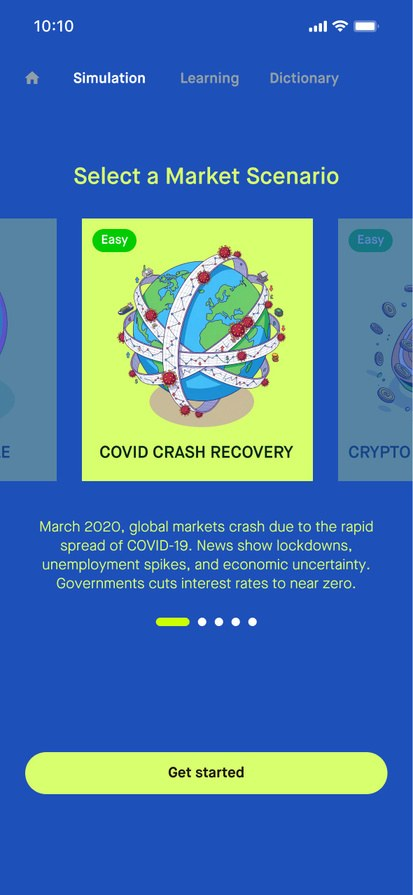
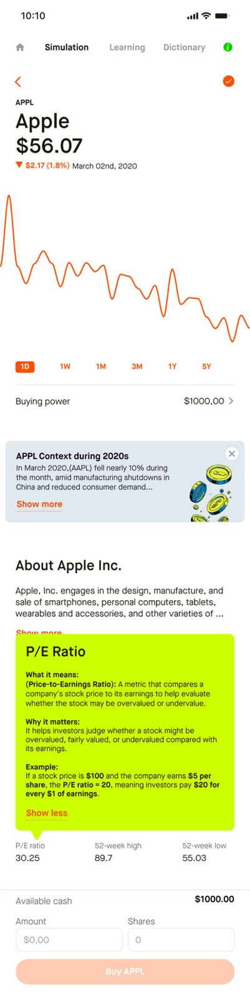
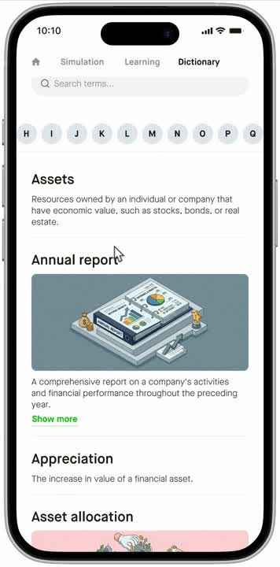

SCAD / IXDS708 / Winter 2026 / Team project
Robinhood Junior
Practice the decision before risking real money.
An investing education concept for first-time investors: explore historical market scenarios with virtual money, build knowledge through short lessons, and look up unfamiliar terms in context.
- Team
- Yifan Tang · Shivani Varandani
Zhaolin Hu · Quy Ho - Focus
- User research
Learning & simulation flows - Process
- Interviews → synthesis
Wireframes → usability testing - Outcome
- Course design concept
Final presentation & process book

Independent academic concept inspired by Robinhood. This team project is not presented as a commissioned or launched Robinhood product. Research and results below describe the team’s work.
01 / Research to opportunity
Confidence requires a place to practice.
The project focuses on university students and recent graduates aged 18–29 in the United States who are beginning to invest. Interview synthesis highlighted three connected concerns: fear of losing money, difficulty identifying trustworthy information, and unfamiliar financial language.
Research foundation
The team developed participant screening and an interview guide, organized findings into needs and themes, examined competing learning formats, and translated those findings into concept directions.
Design response
Combine low-risk practice with accessible explanations, so users can connect a concept to a decision while they are learning.
02 / Three connected experiences
Simulate. Learn. Look it up.



03 / Testing changed the priorities
The simulation needed clearer guidance.
The final presentation reports usability tasks with four users. Understanding a feature name did not always mean participants could complete its flow.
| Task | Reported result | Design direction |
|---|---|---|
| Use the term feature | 4/4 completed it; one did not initially recognize terms as clickable. | Add a visible affordance beside interactive terms. |
| Locate the COVID-19 scenario | 2/4 completed it. | Make the introduction swipeable and replace “event” with “scenario.” |
| Buy 10 shares of Apple | 3/4 completed it; “share” and the ticker were unclear to some users. | Bring explanations into the simulation context. |
| View the one-year result | 3/4 completed it; duration and chart context needed clarification. | Explain duration and include a chart timeline. |
These are small-sample prototype observations reported by the team. Proposed financial-loss reductions and revenue figures in the process book are project targets, not measured outcomes, and are not used as impact claims here.
04 / Outcome & reflection
A learning flow needs support at the decision point.
The completed course submission includes research synthesis, concept development, low-, mid-, and high-fidelity wireframes, journey maps, user flows, and a usability evaluation. The clearest next step is to test contextual definitions and scenario onboarding again, measuring whether users can complete the full simulation without help.
Credits: Yifan Tang, Shivani Varandani, Zhaolin Hu, and Quy Ho. This case presents the shared team deliverable without assigning unverified individual ownership. Source: IXDS708 Winter 2026 final presentation and process book; images are original interface exports embedded in that submission.